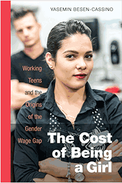

<body bgcolor="#FFFFFF" text="#000000" link="#0000FF" vlink="#CC0000" alink="#CC0000"><center><hr width="350" size="1" align="center" noshade>Traces the origins of the gender wage gap to part-time teenage work, which sets up a dynamic that persists into adulthood<hr width="350" size="1" align="center" noshade><p><a href="https://cdcshoppingcart.uchicago.edu/Cart/ChicagoBook.aspx?ISBN=&&PRESS=temple" target="_top">Buy this book!</a> | <a href="https://cdcshoppingcart.uchicago.edu/Cart/Cart.aspx?PRESS=temple" target="_top">View Cart</a> | <a href="https://cdcshoppingcart.uchicago.edu/Cart/Cart.aspx?PRESS=temple" target="_top">Check Out</a></p><p></p></center><!--none//--><h1 class = "booktitle">The Cost of Being a Girl</h1> <h1 class = "subtitle">Working Teens and the Origins of the Gender Wage Gap</h1>
<h3>Yasemin Besen-Cassino </h3>
paper: $27.95, Dec 17<BR>EAN:&nbsp;978-1-4399-1349-9<BR><font color=#990033>Not Yet Published Preorder</FONT><font size=-7><br>&nbsp;</font></p><p class="info">cloth: $94.50, <BR>EAN:&nbsp;978-1-4399-1348-2<BR><font color=#990033>Not Yet Published Preorder</FONT><font size=-7><br>&nbsp;</font></p><p class="info">e-book: $27.95, <BR>EAN:&nbsp;978-1-4399-1350-5<BR><font color=#990033>Not Yet Published Preorder</FONT><font size=-7><br>&nbsp;</font></p></p></td></tr></table>
<BR> <p class="info">238 pp<BR> 6 x 9<BR> 11 tables, 8 line drawings <p class="info"><font size=-7>&nbsp;</font></p><p class="info">
</P><BLOCKQUOTE></BLOCKQUOTE>
<p>The gender wage gap is one of the most persistent problems of labor markets and women's lives. <br/>Most approaches to explaining the gap focus on <i>adult</i> employment despite the fact that many Americans begin working well before their education is completed. In her critical and compelling new book, <i>The Cost of Being a Girl, </i>Yasemin Besen-Cassino examines the origins of the gender wage gap by looking at the teenage labor force, where comparisons between boys and girls ought to show no difference, but do.<br/><br/>Besen-Cassino's findings are disturbing. Because of discrimination in the market, most teenage girls who start part-time work as babysitters and in other freelance jobs fail to make the same wages as teenage boys who move into employee-type jobs. The "cost" of being a girl is also psychological; when teenage girls work retail jobs in the apparel industry, they have lower wages and body image issues in the long run.<br/><br/>Through in-depth interviews and surveys with workers and employees, <i>The Cost of Being a Girl </i>puts this alarming social problem-which extends to race and class inequality-in to bold relief. <br/>Besen-Cassino emphasizes that early inequalities in the workplace ultimately translate into greater inequalities in the overall labor force.<br>
<P CLASS="top"><A HREF="#top">BACK TO TOP</A></P>&nbsp;
<BR>&nbsp;
&nbsp;<P>
</P><BR>&nbsp;
<H2 class="inpageheading"><A NAME="author bio"></a>About the Author(s)</H2><p><b>Yasemin Besen-Cassino</b> is Associate Professor of Sociology at Montclair State University. She is the author of <i>Consuming Work: Youth Labor in America</i> (Temple); co-author (with Dan Cassino) of <i>Consuming Politics: Jon Stewart, Branding, and the Youth Vote in America</i>, and co-editor (with Michael Kimmel) of <i>The Jessie Bernard Reader</i>.<br>
<P CLASS="top"><A HREF="#top">BACK TO TOP</A></P>
<p><h2 class="inpageheading"><a name="subjects"></a>Subject Categories</h2> <p><a href="http://www.temple.edu/tempress/labor.html" target="_top">Labor Studies and Work</a> <br><a href="http://www.temple.edu/tempress/sociology.html" target="_top">Sociology</a> <br><a href="http://www.temple.edu/tempress/women.html" target="_top">Women's Studies</a> <br><a href="http://www.temple.edu/tempress/youth.html" target="_top">Youth Studies</a> <br><a href="" target="_top"></a> </p>
</p>
<P>
</P>
<p align="center"><a href="https://cdcshoppingcart.uchicago.edu/Cart/ChicagoBook.aspx?ISBN=&&PRESS=temple" target="_top">Buy this book!</a> | <a href="https://cdcshoppingcart.uchicago.edu/Cart/Cart.aspx?PRESS=temple" target="_top">View Cart</a> | <a href="https://cdcshoppingcart.uchicago.edu/Cart/Cart.aspx?PRESS=temple" target="_top">Check Out</a></p><p><font face="Arial" size="1"><a href="copyright.html" onMouseOver="window.status='Web Copyright Policy';return true;" onMouseOut="window.status=''" title="Web Copyright Policy">&copy;</a> 2018 <a href="http://www.temple.edu" target="new" onMouseOver="window.status='Link to Temple University home page';return true;" onMouseOut="window.status=''" title="Link to Temple University home page">Temple University</a>. All Rights Reserved. http://www.temple.edu/tempress/titles/2400_reg.html</font></p>